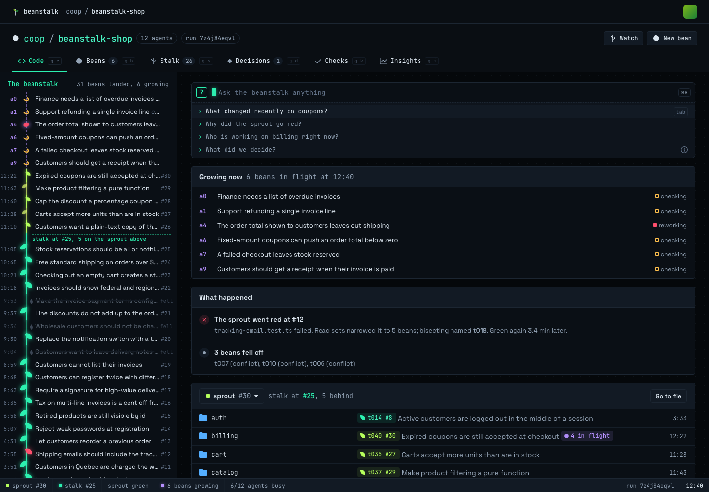
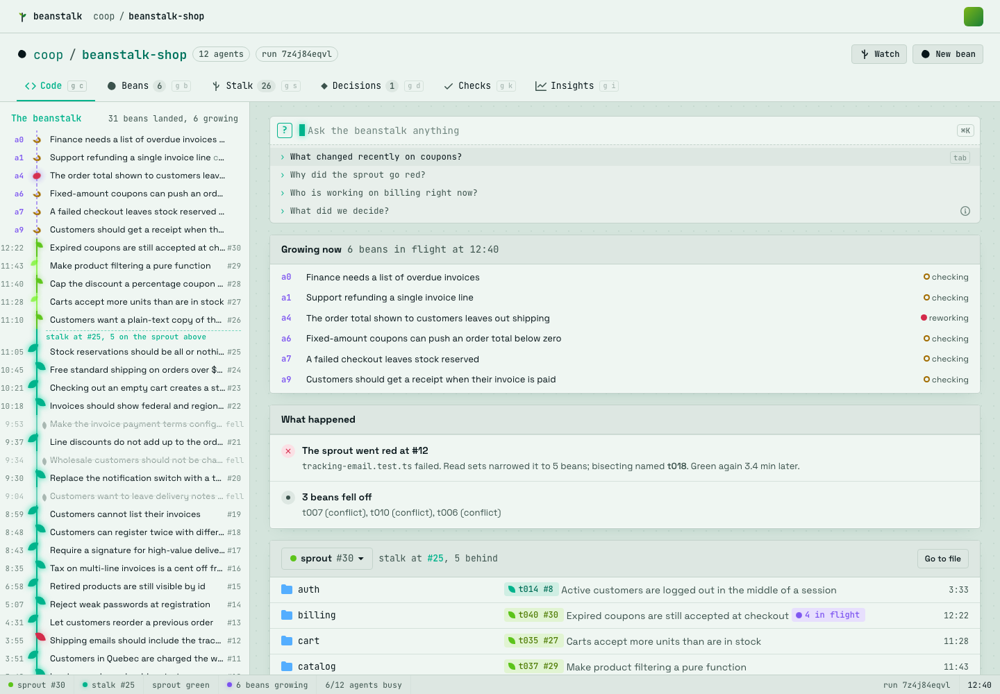
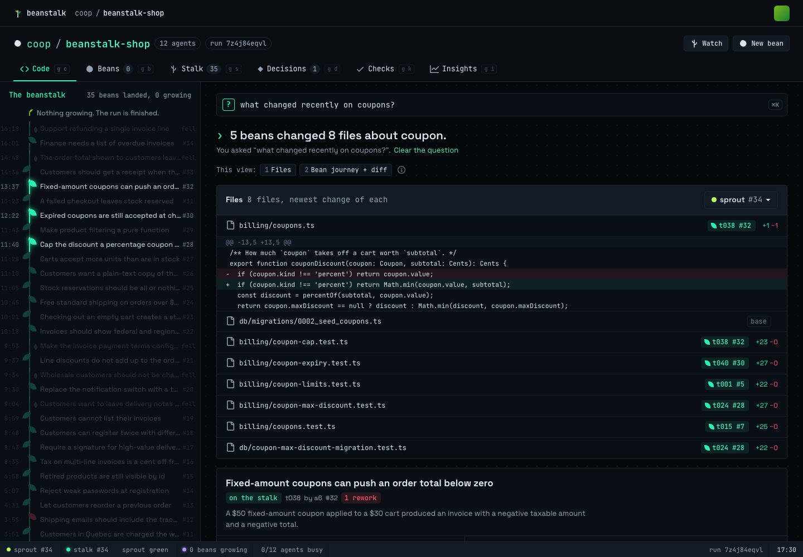
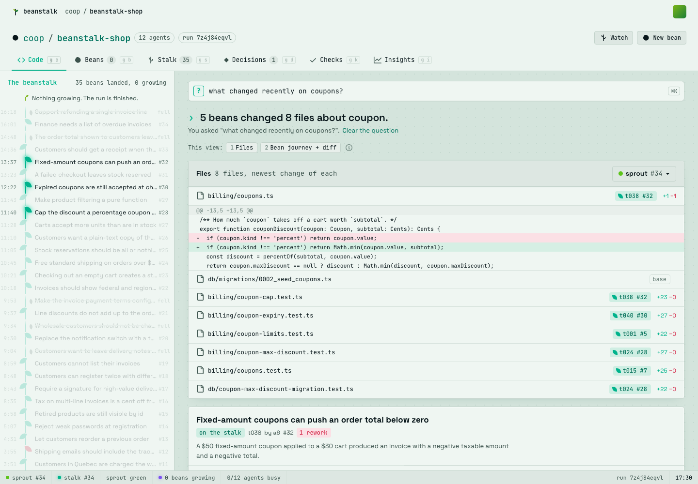

Run a swarm of coding agents on one codebase.
Without them tripping over each other. Each agent's change is a bean. A bean lands on the sprout as soon as it passes a check on the exact tree it joins, and the stalk only ever holds verified work.


Parallel work, without the pile-up.
Twelve agents on one repo usually means a long queue, a wall of conflicts and someone babysitting merges. Beanstalk keeps the work moving and keeps people out of the loop until they're actually needed.
-
No merge queue to wait in
Every bean is checked against the exact tree it would join and lands the moment it passes. Agents don't take turns.
-
Broken work goes back to its author
When a check fails, the bean returns to the agent that wrote it, with the failing tests and what changed underneath it. The stalk never sees it.
-
Stale test values reconcile themselves
When two beans clash only because a test still expects an old value, Beanstalk updates it and moves on. No one gets paged for that.
-
People decide only real disagreements
You're asked when two specs truly disagree, with both sides laid out. Not for every rebase.
Ask the repo anything.
Type a question and the view reshapes around the answer: the files, the beans that touched them, who's working there now and what was decided.
The same question works from your agent, so it can look before it edits.


Three words, and you know how it works.
- Bean
- One agent's change, in flight. Agents grow beans at the tip, many at once.
- Sprout
- Where a bean lands the moment it passes a check on the exact tree. It moves fast and is validated as a whole.
- Stalk
- The stable line. Only validated work is ever promoted to it, so it's always safe to build on.
Bring your own agents.
Use the agents your team already runs. Beanstalk doesn't replace them; it gives them a place to land.
- Local sessions. Claude Code or Codex on your laptop joins with one install.
- Cloud agents. Connect agents that run in the cloud, alongside the local ones.
- Owned by people. Every agent is a session owned by someone on your team, so you always know whose agent did what, and who to ask.
| Agent | Session | Now |
|---|---|---|
| a0 | Claude Codelocal | writing |
| a1 | Codexlocal | checking |
| a4 | Claude Codecloud | reworking |
| a6 | Codexcloud | landed #32 |
| a9 | Claude Codelocal | writing |
We raced it.
On Cloudflare, 12 Claude agents worked through 40 tasks that deliberately collide: the same files, the same tests. We compared Beanstalk with a batched merge queue.
- Shipped
- 37 of 40 tasks
- Most of the work green
- Under 9 minutes, against about 20
- Stable line
- Correct in every run
Getting started is installing the plugin.
Paste one command into the agent you already use. It installs the Beanstalk plugin and signs you in. That's the whole sign-up.
Rather use a form? Sign up as a human.